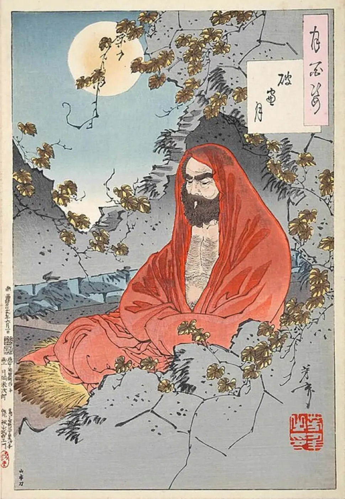
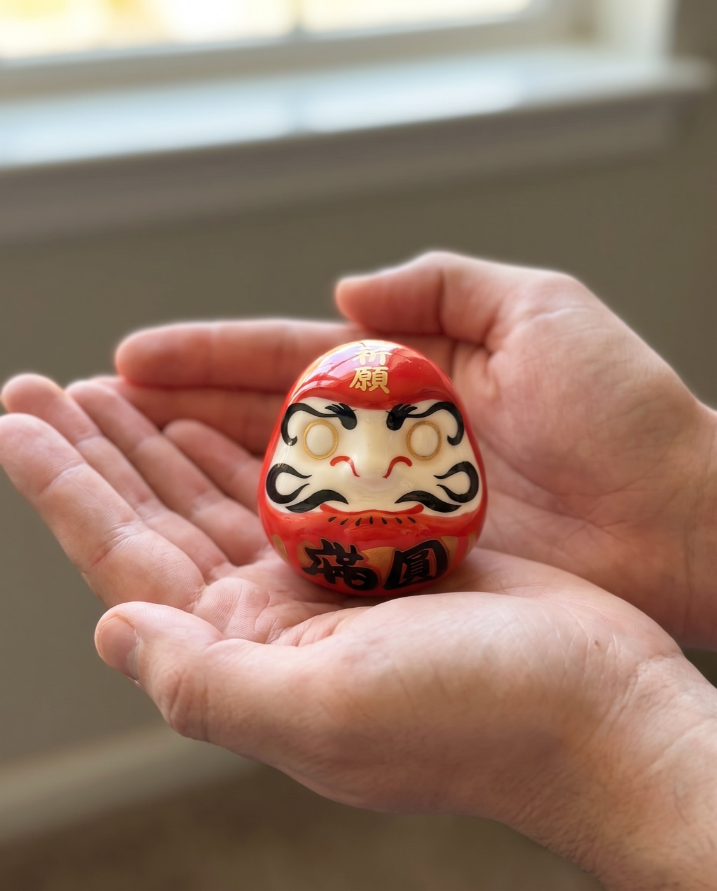
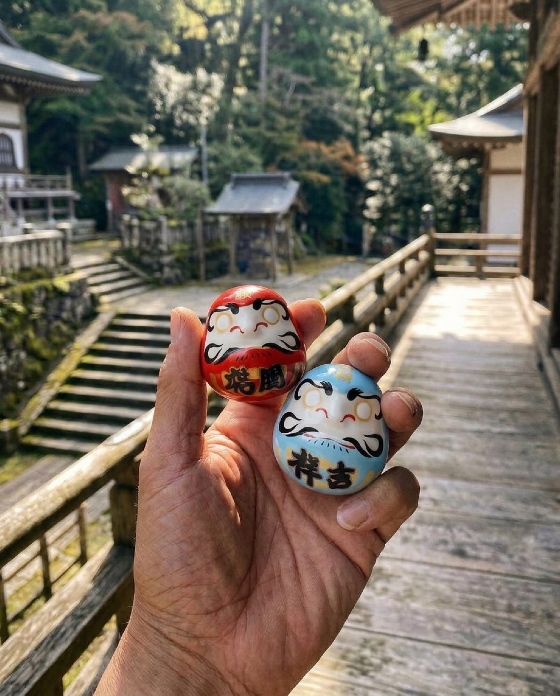
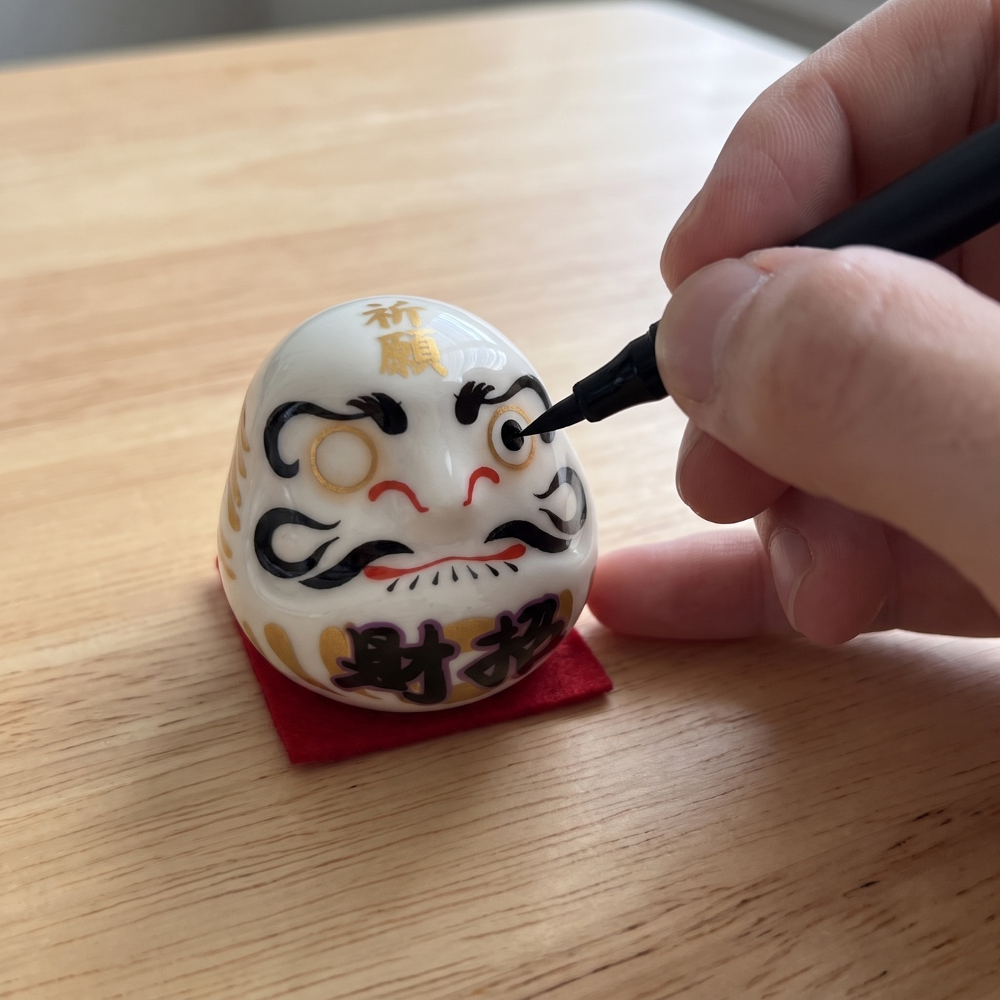
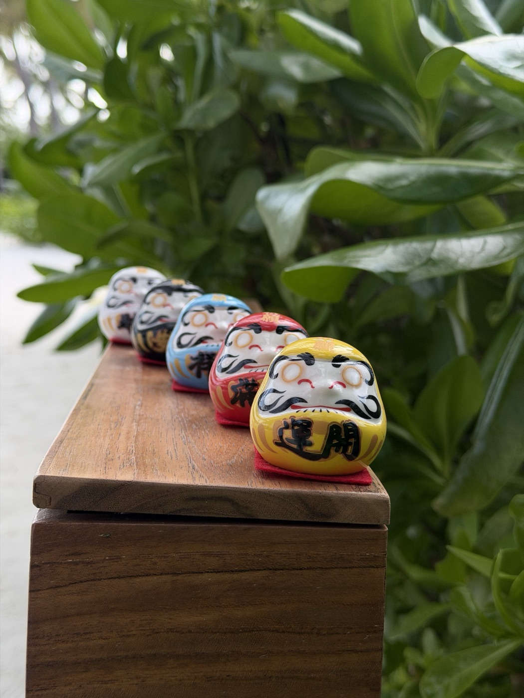
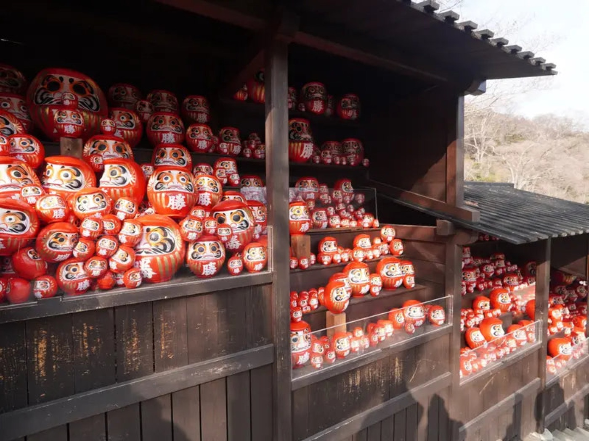
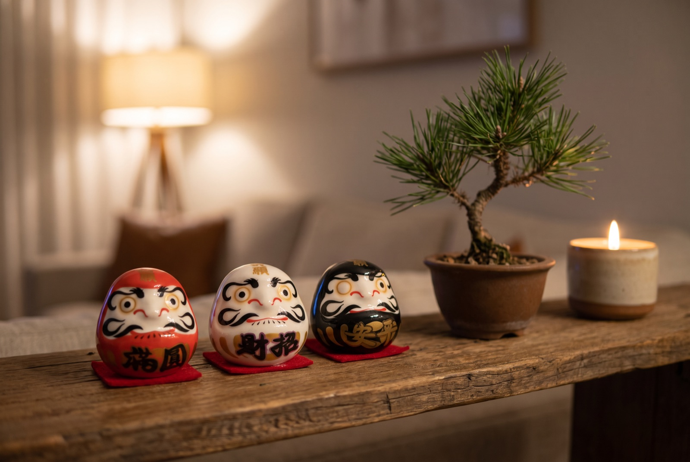
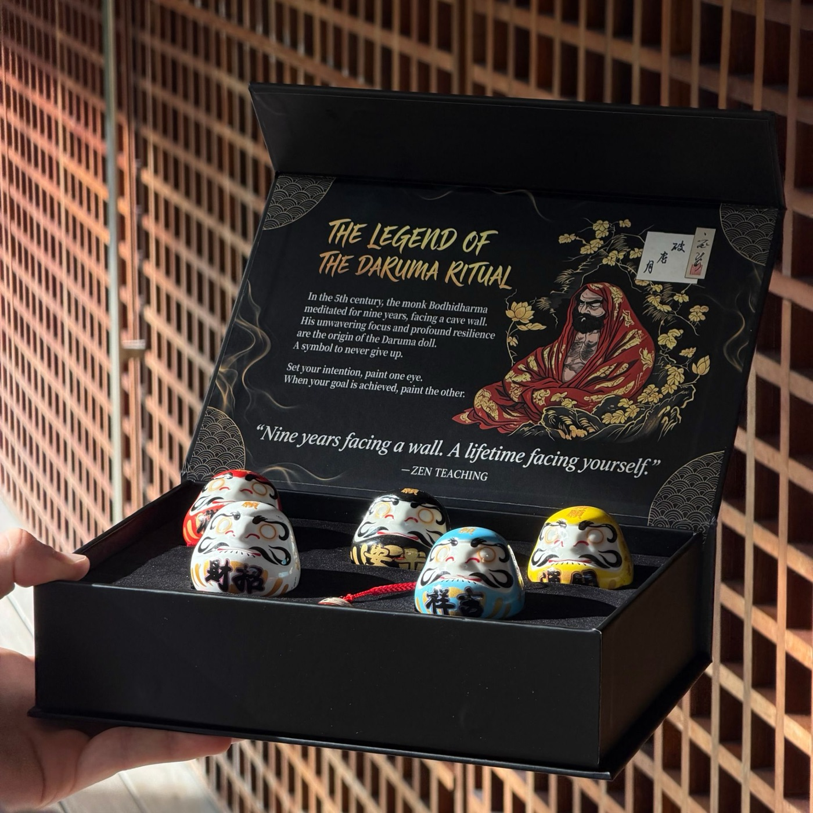

The story of the Daruma
The 400-Year-Old Story Behind Japan's Doll With No Eyes
A monk who sat for nine years, a toy that won't stay down, and a New Year ritual that still fills temple markets every January. Here's the whole story, and how people keep it today.

Before it was a doll, it was a man.
Around 1,500 years ago, a Buddhist monk named Bodhidharma travelled to China. He's remembered as the founder of the school of Buddhism that became Zen in Japan, where his name is Daruma.
The stories about him are legends rather than history, and they're wonderful ones. That's where everything about the doll begins.
Nine years facing a wall
The best-known legend says Bodhidharma sat in meditation facing the wall of a cave for nine years.
He sat so long, the story goes, that his arms and legs withered away. That's why a Daruma has none: it's just a round body and a determined face.
In another version, he was so angry with himself for dozing off that he cut off his own eyelids so it could never happen again. That's why the doll's eyes are so wide and round.
The doll is a portrait of not giving up.

The toy that always gets back up
In Japan, the figure of Daruma merged with an older toy: a weighted roly-poly that rocks back upright whenever it's knocked over.
Push a Daruma and it wobbles, tips, and stands up again. That's the meaning people carry with it, in a proverb nearly every Japanese child knows:
Fall seven times, rise eight.
Official Daruma Ritual store · Free tracked shipping worldwide · 30-day returns
A temple town and a New Year market
The Daruma tradition as most people know it grew up around Shorinzan Daruma-ji, a Zen temple in Takasaki, north-west of Tokyo. The city is still known as the home of the Daruma.
Every New Year, Takasaki holds a Daruma market. Stalls fill with red dolls of every size, from ones that sit in your palm to ones that need two people to carry. People come to choose a new Daruma for the year ahead.

Why the eyes are blank
This is the heart of it. A Daruma arrives with both eyes blank, and you paint them yourself. The custom is called me-ire, "putting in the eyes".
The first eye
When you choose a goal, you paint one eye. Tradition says it's the doll's own left eye, which is the one on your right as it faces you.

The year in between
Then the Daruma goes somewhere you'll see it every day, a shelf, a desk, a family altar, with one eye open. It's not a lucky charm that works on its own. It's a reminder that you made a promise.
The second eye
When the goal is done, you paint the second eye. Election candidates in Japan famously do this on election night, in front of the cameras. At home, it's a quieter, very satisfying moment.
- Day 1Choose one goal. Write it down and paint the first eye: the doll's own left, which is the one on your right as it faces you. Any black marker works (one isn't in the box).
- Every day afterThe Daruma sits where you'll see it: a desk, a shelf, a nightstand. One eye open, waiting.
- Week 4Look at it and ask yourself one honest question: what did I do this week toward the goal?
- The day it's donePaint the second eye. Keep it as a record, or start again with a new goal.
What the colors mean
The classic Daruma is red, the color of Bodhidharma's robes, long associated with luck and protection. Today Daruma come in many colors, each tied to a different kind of wish:
- Red: fortune and luck
- White: purity and new beginnings
- Black: protection
- Yellow: safety and security
- Blue: calm and peace of mind

What happens to last year's Daruma
At the New Year, many people take their old Daruma back to a temple. The dolls are gathered and burned in a ceremony, a way of saying thank you and letting the year go. Then a new Daruma, a new goal, a new first eye.

Outside Japan, many people keep their finished Daruma instead, lined up on a shelf with both eyes painted, a small record of the goals they kept.

Keeping the ritual today
You don't need to travel to Takasaki to start. You need one goal, a black marker and a Daruma, and January 1st is the traditional moment, though any fresh start works.
The Daruma Ritual Premium Set brings the five classic colors together: five ceramic Daruma in a matte-black magnetic box with a velvet tray, the legend and the ritual printed inside, and a small chiming Daruma keychain. One for you, four for the people who matter.

How to tell a real ritual set from a souvenir
- Both eyes arrive blank. That's the whole point: you paint them.
- Each colour carries a meaning, so you can match a doll to a goal.
- It comes with the story and the ritual written down, so the person receiving it knows what to do.
- It's weighted at the base, so it rocks back up when pushed over.
 1 Premium Set
1 Premium Set5 Daruma + 1 chiming keychain
2 Premium Sets10 Daruma + 2 keychains + $20 gift card free
3 Premium Sets15 Daruma + 3 keychains + $20 gift card free
Each set: 5 ceramic Daruma, matte-black magnetic box, legend & ritual cards. Free tracked shipping.
Official Daruma Ritual store · Free tracked shipping worldwide · 30-day returns
“I was pleased to gift my two sets, one to my therapist who has guided me over the years and another to a young woman who introduced me to the concept. Both were utterly delighted! I also love the gentle chiming of my daruma charm on my purse.”
“Finally I was able to perform our first ritual with my daughter and her husband. I will be purchasing more sets to give to my other children. … this was a good way to have them set goals to focus on all of the good things in their lives.”
Questions
What exactly is in a set?
Five ceramic Daruma in red, white, black, yellow and blue, a matte-black magnetic gift box with a velvet tray, the legend & ritual cards, and a chiming Daruma keychain.
Is a pen or marker included?
No. Any black marker or brush pen works for the eyes.
Do I need to know anything about Japanese culture?
No. The ritual card in the box explains the steps in a minute.
How does shipping work?
Shipping is free and tracked to every country. The delivery estimate is shown at checkout; international post is slower in December, so order early for Christmas.
What if it's not right?
You have 30 days after it arrives to request a return.
Official Daruma Ritual store · Free tracked shipping worldwide · 30-day returns